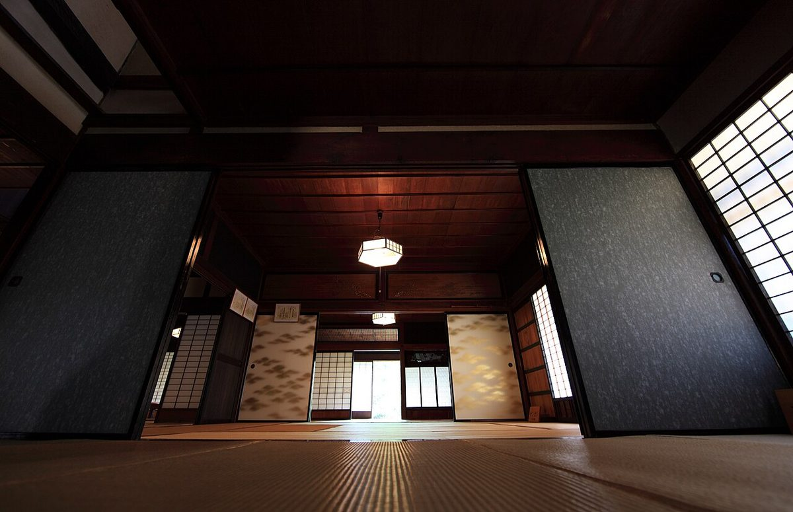
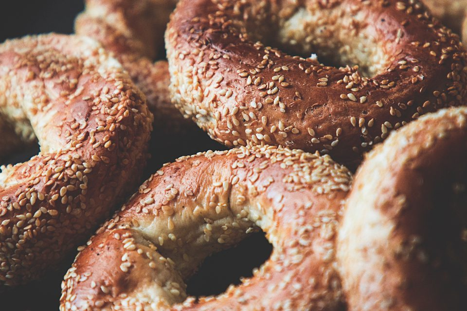
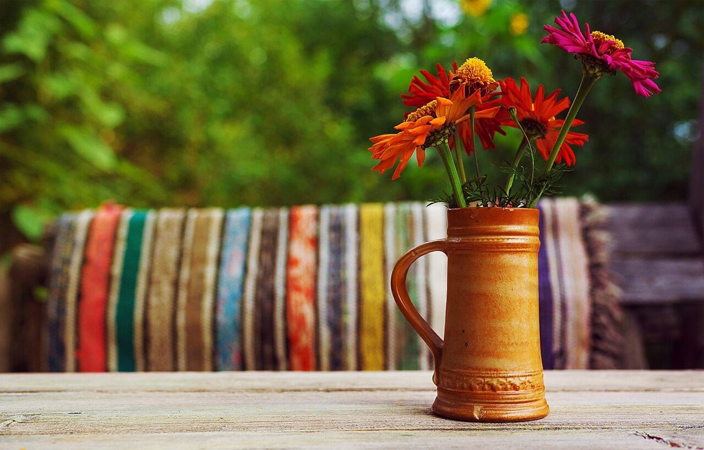

お店のこと
ABOUT
「ICHI 5 MONE(イチゴー モネ)」は、大分県日田市にあるアンティークテイストのカフェです。お店のInstagramでは、天然酵母のベーグルや季節のケーキ、甘さ控えめのお菓子が紹介されています。
口コミサイトの投稿には、古民家を改装した落ち着いた空間で、ソファ席や窓辺のカウンター席があるとの紹介も見られます。古いものの落ち着きと、ていねいなおやつ時間。それがこのお店の軸だと、このページでは考えました。
確認できたこと:2024年10月開店(食べログ掲載情報)/天然酵母ベーグル・季節のケーキ・スコーンなどの紹介あり/ランチは予約制との口コミ情報あり(要確認)
店名の意味や由来は確認できていないため、ここでは触れていません。
店名の意味や由来は確認できていないため、ここでは触れていません。

メニュー・提供内容
MENU
お店の発信で紹介されている品のイメージです。価格・提供日・詳細は準備中です。

天然酵母のベーグル
Instagramで人気として紹介されています。

季節のケーキ
甘さ控えめのケーキが紹介されています。

焼き菓子
スコーンや焼き菓子の紹介があります。

コーヒー・ドリンク
ドリンクの内容は準備中です。
ひとやすみの景色
GALLERY
写真はフリー素材のイメージで、店舗の実際の様子ではありません。



口コミ
VOICE
イメージ例 以下は制作側が作成した例文で、実在のお客様の声ではありません。
イメージ例
古いものに囲まれた落ち着いた雰囲気で、ついゆっくりしてしまいました。
イメージ例
ベーグルの噛みごたえが好きです。ケーキも甘さが控えめで食べやすいです。
イメージ例
窓辺の席で本を読みながら過ごす、午後のひとときがよかったです。
アクセス
ACCESS
- 店名
- ICHI 5 MONE(イチゴー モネ)
- 住所
- 〒877-1351 大分県日田市三ノ宮町一丁目1550
- 電話
- 準備中
- 営業時間
- 準備中
- 定休日
- 準備中
- @ichi5.mone